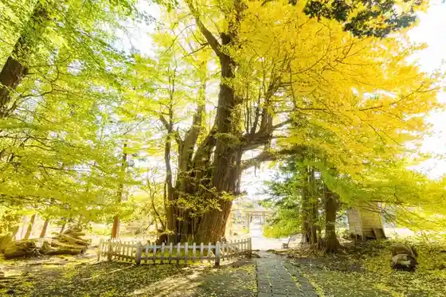
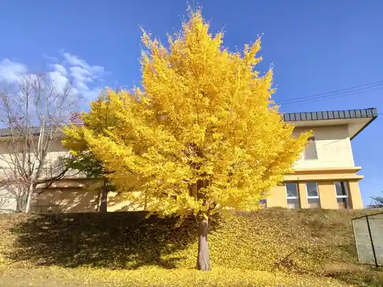
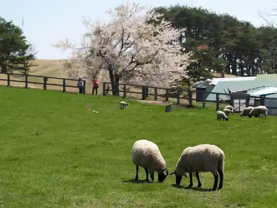
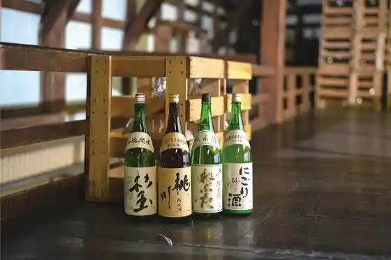

Nippon'ichi no Jiyu no Megamizo
Oirase, Aomori · 0178-52-6744 · Official / source link
Negishi no Oi Cho
Oirase, Aomori · 0178-56-4276 · Official / source link

Icho Park (Nippon'ichi no Jiyu no Megamizo)
Oirase, Aomori · 0178-52-6744 · Official / source link

Kawayoguriin Ranch
Oirase, Aomori · 0178-56-4111 · Official / source link

Momo Kawa (Momo Kawa Shuzo)
Oirase, Aomori · 0178-52-2241 · Official / source link

Aguri Village Oirase
Oirase, Aomori · 0178-56-2884080-2839-6061 · Official / source link
Kehi Shrine
Oirase, Aomori · 0178-56-2591 · Official / source link
Shimoda Park
Oirase, Aomori · 0178-56-4702 · Official / source link
Aoi Mori Tetsudo Mukaiyama Eki Museum
Oirase, Aomori · 0178-56-4703 · Official / source link
Oyama Shogi Memorial Museum
Oirase, Aomori · 0178-52-1411 · Official / source link
Momoishi Emburi
Oirase, Aomori · 0178-20-0405 · Official / source link
Oirase Kanko PR Center (Aji Matsuri Kan)
Oirase, Aomori · 0178-52-8696 · Official / source link
Kuni Historic Site (Ako Bo Kofun Gun)
Oirase, Aomori · 0178-20-0405 · Official / source link
Oirase Ako Bo Kofun Kan
Oirase, Aomori · 0178-20-0405 · Official / source link